For choose the correct cannon u have to read "You can hear..." the text u read will say the bob that spawn, so u can choice the right cannon to put.
https://board.en.aion.gameforge.com/ind ... /?pageNo=2
You hear rustling - Put anything up, King Saam's means you've S Ranked.
If the first gold sentence is any of these put up the -Anti-aircraft Canon
You hear screams
You hear footsteps
You hear wailing
You hear an oppressive mood in the air
If you hear any of the following - Put up the other cannon (3rd option)
You hear warriors (Horses)
You hear loud heavy breathing (
Hope this can help^^
Luna Hell Pass/Contaminated Underpath - Beta 28.10.2017

Re: Lunar Hell Pass Script
Awesome script man, really, the combat + healing routine and decision according barricade status are superb.
I would recommend to place the character a little bit further, the current coordinates are missing monsters that have high range, such as the "You feel a cold sensation" wave, Transfectant Flyers, they deal tons of damage from distance and the first barricade was almost down when the NPC killed them. Only Crushing Darkness (2) skill has enough range for them , Soul Skewer (1) cant reach them.
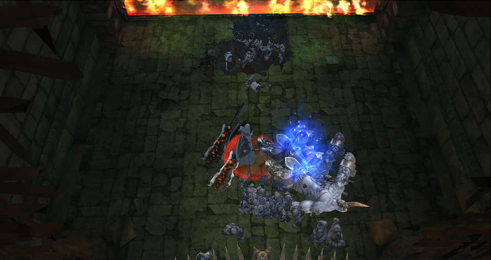
Respecting MAAD-S boss, It would be better to get his aggro a little bit earlier into the acid pool a few seconds after you get him targeted, otherwise he will go inmediately for first barricade and take it down in no time. If you can get his aggro early, chances on getting S are highly increased.
In resume: after the "Darkness energy" message appears, you should move to the center of the green acid pool and wait for MAAD-S boss, 5 metters above his head is enough to not get hit by him, after that you need to attack him and return to the original coordinate in front of the first barricade, so the NPC kill him. Leeches are not that important, they dont do that much damage to the barricade.
Example:
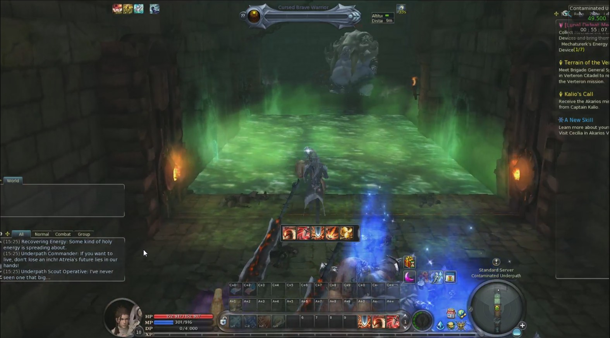
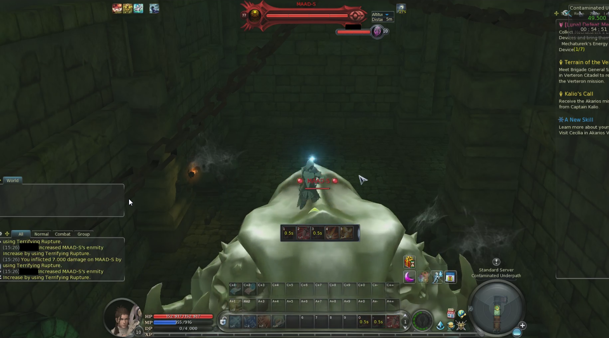
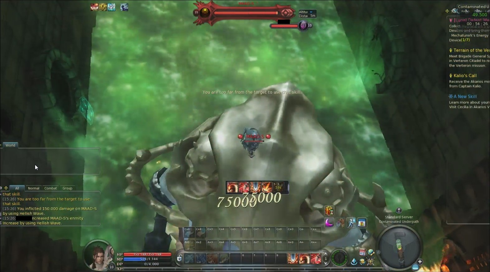
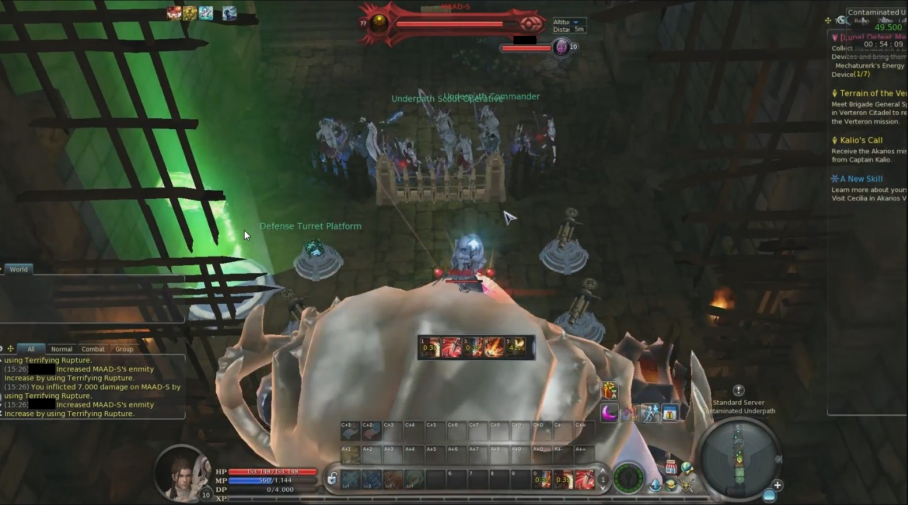
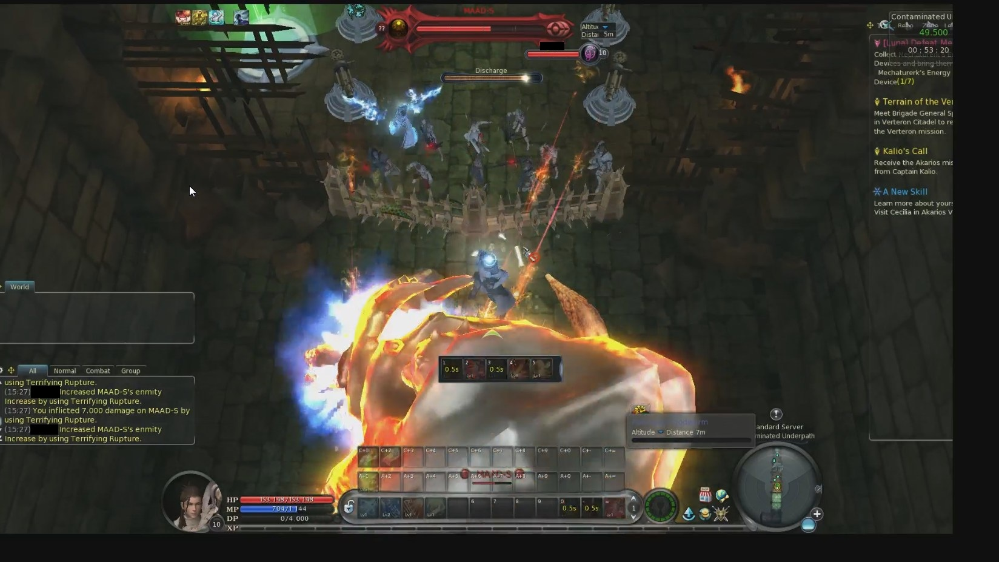
Infected Flesh Lump is not being looted, the script ends with infinite attacks to break the experience beads, its not that important tho, but it would be nice to loot it automatically.
I will be testing the script with several characters, all possible bugs and recommendations will be posted here. Thank you for your hard work Cooco .
.
I would recommend to place the character a little bit further, the current coordinates are missing monsters that have high range, such as the "You feel a cold sensation" wave, Transfectant Flyers, they deal tons of damage from distance and the first barricade was almost down when the NPC killed them. Only Crushing Darkness (2) skill has enough range for them , Soul Skewer (1) cant reach them.
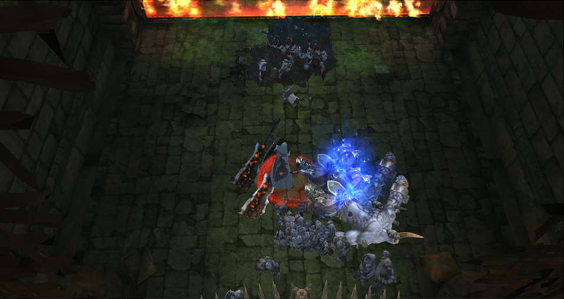
Respecting MAAD-S boss, It would be better to get his aggro a little bit earlier into the acid pool a few seconds after you get him targeted, otherwise he will go inmediately for first barricade and take it down in no time. If you can get his aggro early, chances on getting S are highly increased.
In resume: after the "Darkness energy" message appears, you should move to the center of the green acid pool and wait for MAAD-S boss, 5 metters above his head is enough to not get hit by him, after that you need to attack him and return to the original coordinate in front of the first barricade, so the NPC kill him. Leeches are not that important, they dont do that much damage to the barricade.
Example:
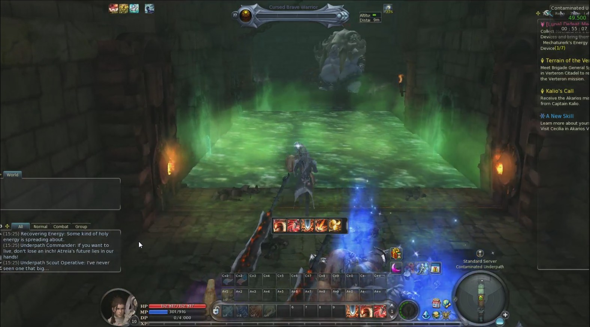
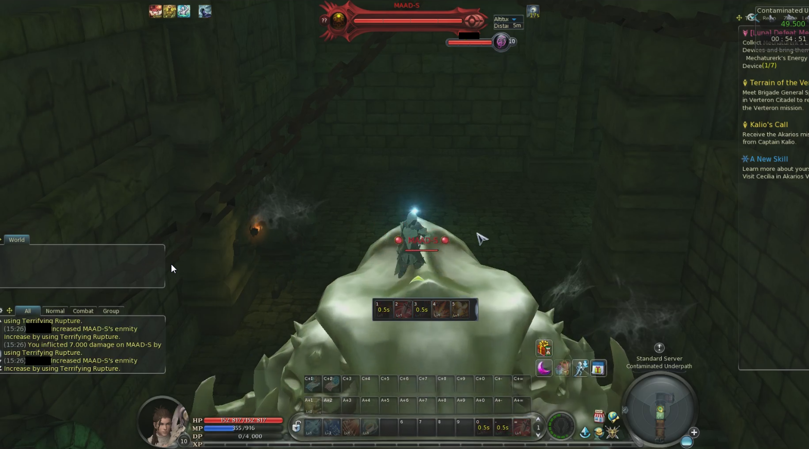
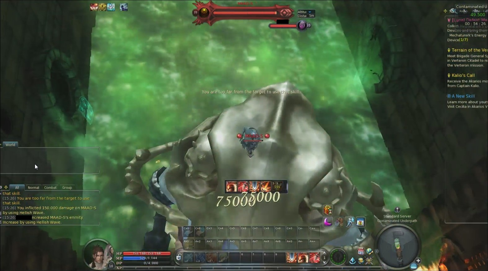
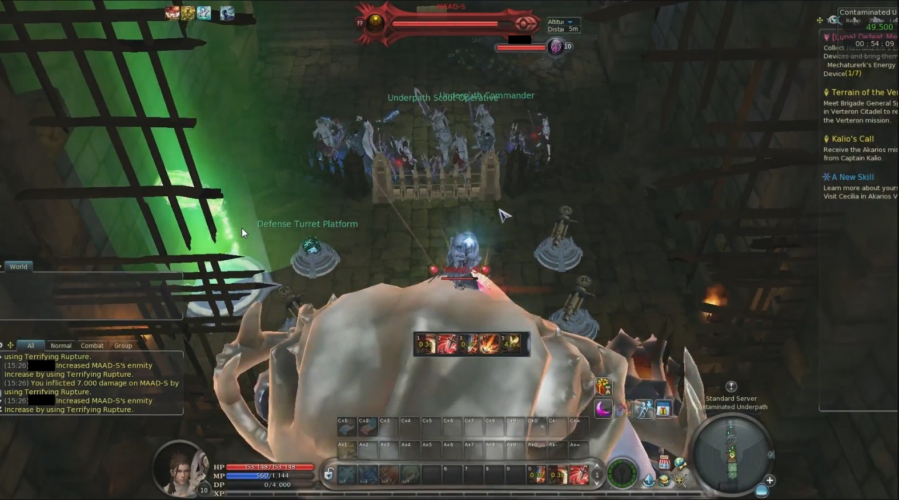
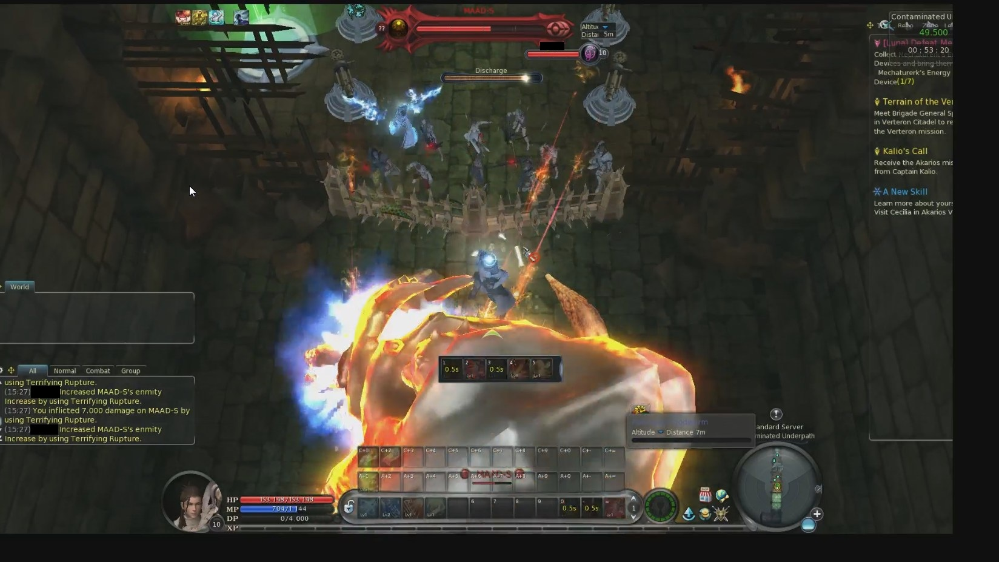
Infected Flesh Lump is not being looted, the script ends with infinite attacks to break the experience beads, its not that important tho, but it would be nice to loot it automatically.
I will be testing the script with several characters, all possible bugs and recommendations will be posted here. Thank you for your hard work Cooco
Re: Lunar Hell Pass Script
I'm a bit scared. Moving in the Green Acid Pool is normally impossible, there is ban risk?smaion40 wrote: ↑Tue Oct 17, 2017 4:16 pmIn resume: after the "Darkness energy" message appears, you should move to the center of the green acid pool and wait for MAAD-S boss, 5 metters above his head is enough to not get hit by him, after that you need to attack him and return to the original coordinate in front of the first barricade, so the NPC kill him. Leeches are not that important, they dont do that much damage to the barricade.
Re: Lunar Hell Pass Script
I did it plenty of times and I had no bans so far. Actually, just using No Gravity inside any instance can give you a risk of ban, only if you are really unlucky to be inspected by a GM in that moment. I wouldnt worry too much, anyway you are only going over the acid pool for a few seconds while you get aggro and then going back to frontal barricade.cooco wrote: ↑Tue Oct 17, 2017 5:26 pmI'm a bit scared. Moving in the Green Acid Pool is normally impossible, there is ban risk?smaion40 wrote: ↑Tue Oct 17, 2017 4:16 pmIn resume: after the "Darkness energy" message appears, you should move to the center of the green acid pool and wait for MAAD-S boss, 5 metters above his head is enough to not get hit by him, after that you need to attack him and return to the original coordinate in front of the first barricade, so the NPC kill him. Leeches are not that important, they dont do that much damage to the barricade.
I did 6 runs already, and all of them were A because the character is not getting MAAD-S aggro and he destroys the frontal barricade
I also noticed that Cursed Brave Warrior (horses) reset everytime because character gets aggro and since its attacking and not moving then they reset and go back to the spawn zone and come back with full health. This is pretty important because these horses have almost the highest dps in that instance, and everytime they reset they have more time to DPS the frontal barricade. It would be nice to implement a small X axis movement when target "Cursed Brave Warrior" is true, just like the one you did at the end (Y axis) to avoid MAAD-S reset.
Re: Lunar Hell Pass Script
interesting, i'll try to implement some "mini movement" to avoid to lose aggrosmaion40 wrote: ↑Tue Oct 17, 2017 5:42 pmI also noticed that Cursed Brave Warrior (horses) reset everytime because character gets aggro and since its attacking and not moving then they reset and go back to the spawn zone and come back with full health. This is pretty important because these horses have almost the highest dps in that instance, and everytime they reset they have more time to DPS the frontal barricade. It would be nice to implement a small X axis movement when target "Cursed Brave Warrior" is true, just like the one you did at the end (Y axis) to avoid MAAD-S reset.
Re: Luna Hell Pass/Contaminated Underpath - Beta 18.10.2017
The new position is perfect for any kind of wave, I noticed you change it according the monster you are selecting which is really smart.
MicroTeleport is also working as intended, I havent seen any more horse reset.
I got a "No appropiate target" spam everytime it tries to set up a new cannon, it seems the problem is at line 463:
Code: Select all
PlayerInput:Console("/Select tower platform")there are few issues with the MAAD-S boss:
1) Right now the height of the original coordinate is only 2m above MAAD-S, enough for him to attack you, there's no way to survive this way, even if you use the fountain because his damage is too high. I recommend to go up a little bit from the original coordinate, just for the last boss stage (5m-6m above the boss is perfect).
2) Y axis movement for "EscapeAggro" should be limited to Frontal and Rear barricade areas, I saw he's going to the instance spawn location (where the gate is), in that place boss will jump on top of the stairs get higher and he will hit you. It's important to stay close to both barricades, so you maximize DPS using both NPC lines.
3) The routine for Acid Pool is nice, I would suggest to add more coordinates in order to make the return to frontal barricade slower, that way you can attack the boss for a longer time and build up some solid aggro. I got the aggro stolen because NPC damage is way too high compared to the few hits you give him before returning to barricade.
PD: I got this error right after using the Hp fountain at the last boss stage, the script stopped after that.
Code: Select all
- [string "Luna Daily.lua"]:171: attempt to index global 'RecoveringEnergyPos' (a nil value)Re: Luna Hell Pass/Contaminated Underpath - Beta 18.10.2017
Script Update
Should be fixed(can't test NA version)smaion40 wrote: ↑Wed Oct 18, 2017 2:11 am
I got a "No appropiate target" spam everytime it tries to set up a new cannon, it seems the problem is at line 463:
The name for turret artifact in NA is "Defense Turret Platform"Code: Select all
PlayerInput:Console("/Select tower platform")
This is actually impossible, if i try to go up a little bit character position is auto-reset by client. I will try to work on some kids of "trick" later.smaion40 wrote: ↑Wed Oct 18, 2017 2:11 am
there are few issues with the MAAD-S boss:
1) Right now the height of the original coordinate is only 2m above MAAD-S, enough for him to attack you, there's no way to survive this way, even if you use the fountain because his damage is too high. I recommend to go up a little bit from the original coordinate, just for the last boss stage (5m-6m above the boss is perfect).
Now movement is limited to Stairs-Barricade (MAD-S waste time to go up/down stair but not in spawn zone) .smaion40 wrote: ↑Wed Oct 18, 2017 2:11 am
2) Y axis movement for "EscapeAggro" should be limited to Frontal and Rear barricade areas, I saw he's going to the instance spawn location (where the gate is), in that place boss will jump on top of the stairs get higher and he will hit you. It's important to stay close to both barricades, so you maximize DPS using both NPC lines.
Now should keep aggro more easily. Still to improve.smaion40 wrote: ↑Wed Oct 18, 2017 2:11 am
3) The routine for Acid Pool is nice, I would suggest to add more coordinates in order to make the return to frontal barricade slower, that way you can attack the boss for a longer time and build up some solid aggro. I got the aggro stolen because NPC damage is way too high compared to the few hits you give him before returning to barricade.
Should be fixed(still not 100% sure)smaion40 wrote: ↑Wed Oct 18, 2017 2:11 amPD: I got this error right after using the Hp fountain at the last boss stage, the script stopped after that.
Code: Select all
- [string "Luna Daily.lua"]:171: attempt to index global 'RecoveringEnergyPos' (a nil value)
Re: Luna Hell Pass/Contaminated Underpath - Beta 18.10.2017
Dont worry, that's what I'm here for ^^.
I'm sorry, I forgot to mention that, actually there's a way to do it. You should start the script in front of the first gate and then move from there to the cannons area, that way you can have a higher original altitude and then go higher to 5 - 6m over the Boss without getting client reset.
In my opinion, there's no need to jump on the stairs, but some extra altitude is never bad tho.
Example:
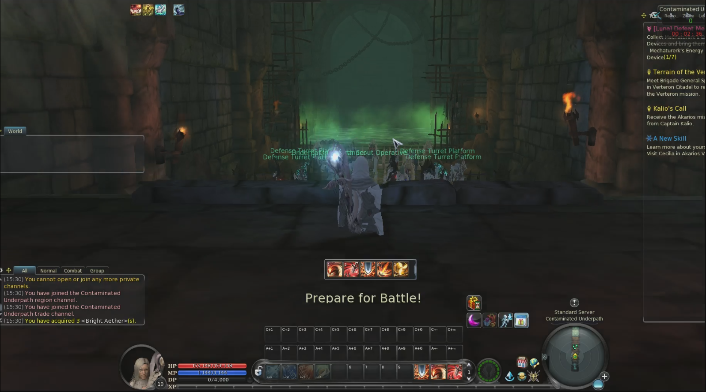
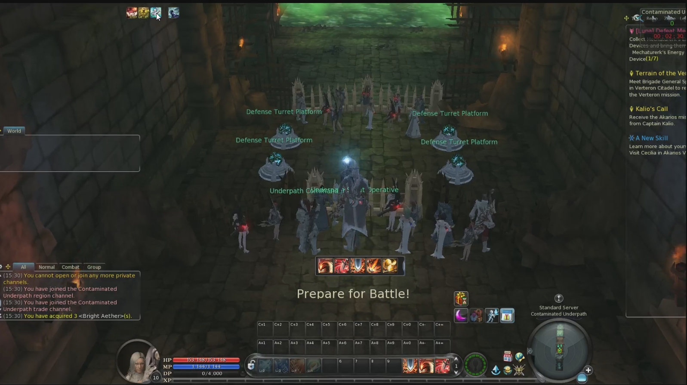
I'll test the current version and add my feedback as soon as possible.
Who is online
Users browsing this forum: No registered users and 0 guests